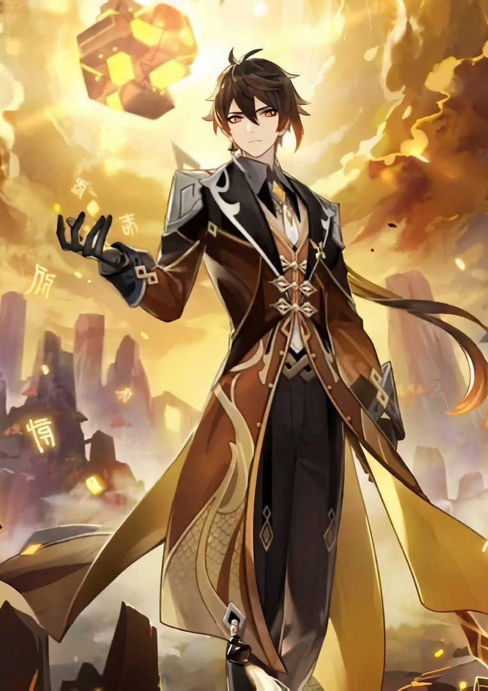

Данная страница полностью посвящена самому лучшему персонажу игры Геншин: Чжуну Ли! Вы не знаете что такое Геншин? Геншин - лучшая игра в мире, в которую вы просто обязаны поиграть, потому что в ней находится лучший персонаж игры, то есть Чжун Ли, он же Моракс, он же Властелин Камня, он же повелитель Ли Юэ, он же Гоша. Вы не согласны с тем, что Чжун Ли - это лучший персонаж Геншина, а Геншин - лучшая игра мира? Осуждаю!
Предупреждение: данный текст не отражает реальной позиции автора, а лишь показывает его глубокий уровень метаиронии.
